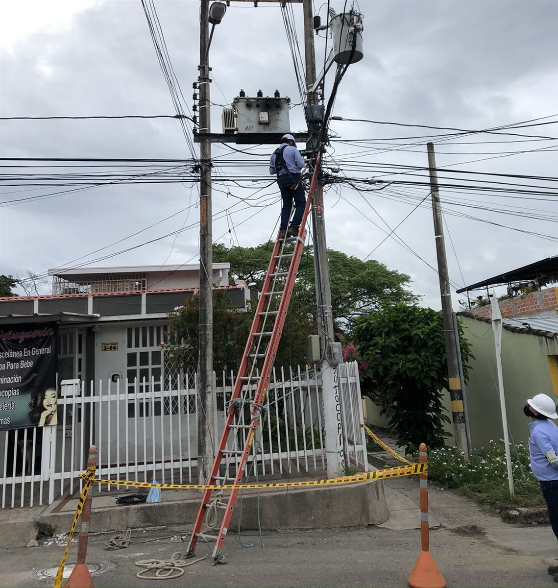
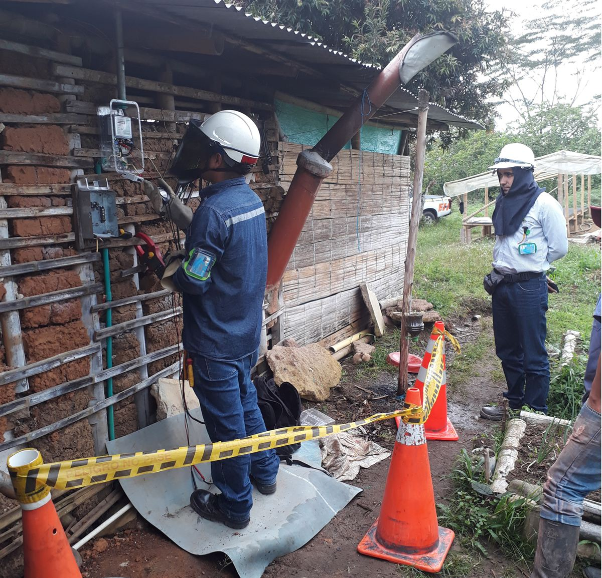
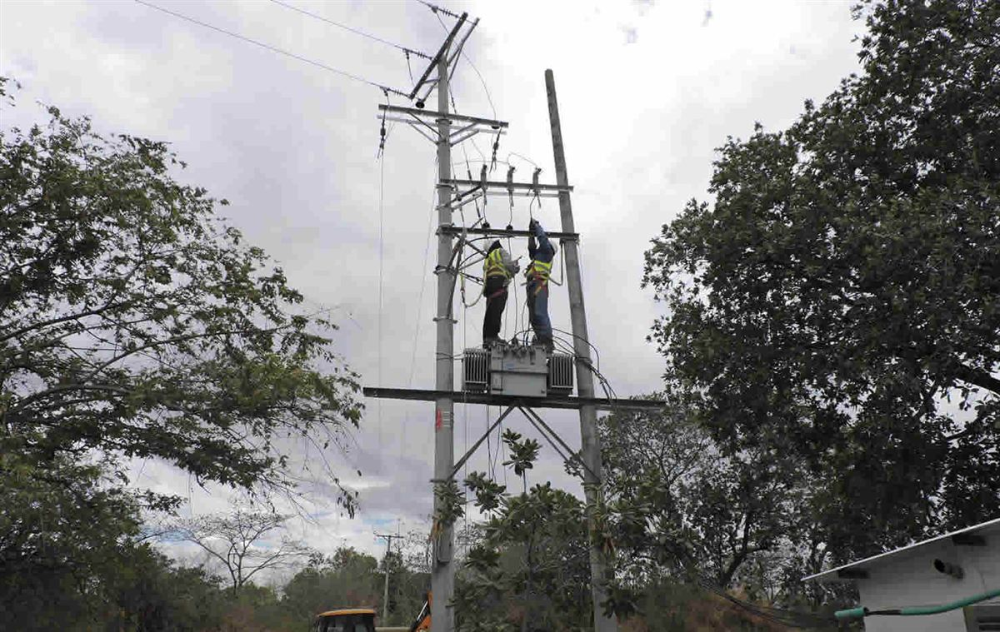
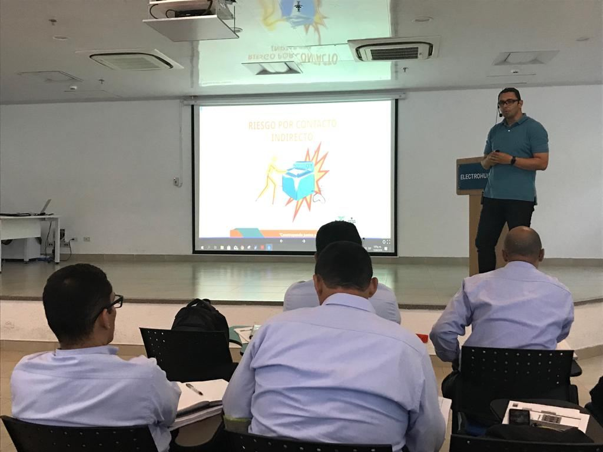

Más de una década de experiencia en el diseño, la asesoría y la interventoría de obras eléctricas, con soluciones integrales para nuestros clientes.
Construcción, Ingeniería y Consultoría — Cinco S.A.S. fue fundada el 29 de diciembre de 2009, por lo cual ya cuenta con más de una década de presencia y trayectoria en el mercado.
Las actividades principales de la empresa han sido la construcción, el diseño, la asesoría y la interventoría de obras eléctricas, pero con el transcurso de los años se han incorporado nuevas líneas de prestación de servicios con el objetivo de proveer a nuestros clientes una solución integral a sus necesidades. Contamos con un excelente grupo humano el cual se capacita en forma permanente a fin de estar actualizado en los cambios e innovaciones tecnológicas y reglamentos que nos competen.
Nuestro objetivo principal es lograr una permanente mejora continua en nuestras actividades a fin de dar un servicio que asegure una entrega a tiempo, con su correspondiente asesoramiento y soporte técnico.
Cinco S.A.S. cuenta con un Sistema de Gestión Integrado - HSEQ certificado bajo las normas ISO 9001:2015, ISO 14001:2015 y la ISO 45001:2018, por lo cual el cumplimiento de las pautas mencionadas nos obliga a mantener un adecuado desempeño de nuestro sistema y procedimientos a fin de lograr como meta final una satisfacción plena de nuestros clientes.
Conoce las principales líneas de servicio que ofrecemos.



